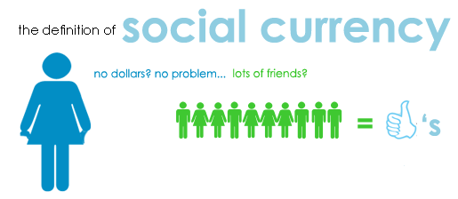
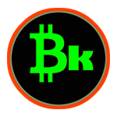
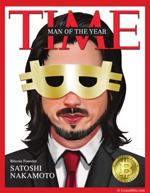
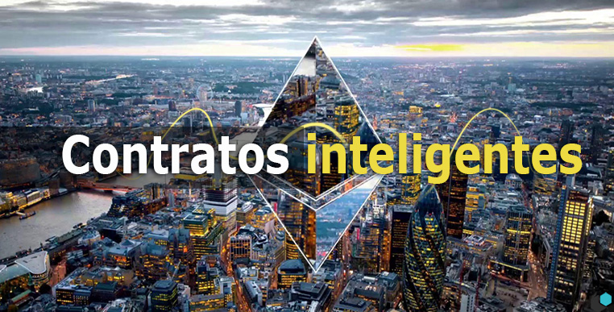
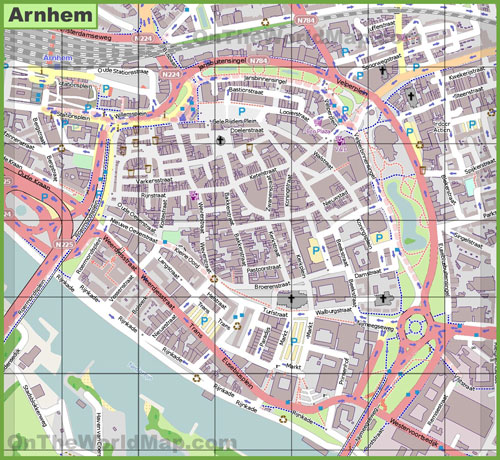

Moneda Social
El BasKoin (Bk) es una moneda social, una herramienta creada y utilizada por colectivos y particulares al objeto de poder facilitar intercambios tanto de productos como de servicios o de conocimientos. Las monedas sociales se caracterizan por lo siguiente:
- Son sistemas monetarios de vecindad basados en la confianza y la reciprocidad
- Se diferencian del dinero de curso legal pues en ocasiones pueden perder valor con el tiempo (fenómeno denominado “oxidación” o interés negativo) con el objetivo de que no se pueda acumular
- Pueden ser tan variados en su forma y en su funcionamiento como lo son las monedas nacionales de curso legal
El dinero local es un acuerdo dentro de una comunidad de usar algo como medio de intercambioBernard Lietaer
Denominándose monedas complementarias, se refieren a que algunas de estas monedas pretenden complementar las deficiencias del dinero legal con las ventajas que tiene este recursos como dinamizador del comercio local de proximidad, del autoempleo y de optimización de los recursos locales.


BasKoin (Bk) es una criptomoneda descentralizada y de código abierto que ha sido creada en base al Bitcoin, pero que incluye características especiales que este no posee. Entre ellas destaca la finalidad para la que fue creada: el poder disponer de una moneda segura para el uso cotidiano en el tejido comercial local. Además, debido al volumen de moneda en circulación la capacidad de la red de procesar bloques es muy inferior al tiempo que tarda el Bitcoin, es decir, sus transacciones son mucho más rápidas e igual de seguras.
La Importancia del Consenso
El término consenso es aquel que se utiliza para hacer referencia al acto mediante el cual varias partes llegan a un acuerdo que satisface a todos. El consenso es una parte muy importante de la vida en democracia ya que supone que cualquier decisión debe ser aceptada por todos los integrantes de un grupo, de otro manera estaríamos hablando de algún tipo de autoritarismo que no es beneficioso para la convivencia armoniosa.
Para entender el concepto de consenso es importante señalar que la convivencia humana, a diferencia de la animal, no se basa en instintos y fuerzas incontenibles sino que está organizada en torno a principios racionales y esto hace que para muchas cosas de la vida cotidiana dos o más individuos puedan ponerse de acuerdo sobre lo que es mejor y más adecuado de acuerdo al entorno y contexto. El consenso supone que las partes que participan en el fenómeno se ponen de acuerdo aceptando incluso aquellos elementos con los que no estén totalmente satisfechos pero que harán que se pueda llegar a un punto intermedio.
El consenso puede estar presente en innumerables situaciones de la vida cotidiana, por ejemplo cuando se ponen de acuerdo dos o más partes sobre el precio de un producto, o sobre cómo actuar frente a una situación específica, etc. Sin embargo, en algunas situaciones de la vida política, el consenso es esencial para llegar a transformar la realidad y realizar sobre ella cambios realmente útiles. Esto es así por ejemplo cuando diferentes organizaciones políticas deben ponerse de acuerdo o llegar a un consenso sobre cómo actuar frente a un conflicto difícil de solucionar. El consenso también existe en el mundo de la ciencia y aquí es vital ya que implica que cuando una teoría es propuesta o publicada, debe ser aceptada por el resto de la comunidad científica para que se pueda, a partir de ella, seguir investigando y resolviendo enigmas científicos.
Nuevas Ideas para un Presente Sostenible
Bitcoin
Las Bitcoins son monedas virtuales completamente digitales e intercambiadas directamente entre dos partes por medio de la web y sin la necesidad de un intermediario. Fueron creados en el 2009 por un programador bajo el pseudónimo de Satoshi Nakamoto.

A diferencia del dinero fiduciario moderno, Bitcoin, el cual ha sido a menudo llamado “dinero para el internet”, no es controlado o respaldado por ningún banco o autoridad central del gobierno, como la Reserva Federal o Banxico, por ejemplo. Las Bitcoins son pedazos de códigos de computadora –algoritmos matemáticos—que representan unidades monetarias. Hoy en día hay aproximadamente millones de Bitcoins en existencia. En teoría, sólo alrededor de 21 millones de Bitcoins se generarán hasta el año 2140. A diferencia de las transacciones de tarjetas de crédito, las hechas de Bitcoin, que internacionalmente toman lugar todos los días, son irreversibles, sólo pueden ser reembolsadas por la persona que recibe el dinero.
Blockchain
Blockchain o cadena de bloques es el sistema sobre el que asienta la moneda virtual Bitcoin, creada por el misterioso japonés Satoshi Nakamoto justo en los albores de la crisis económica y que no está respaldada por ningún gobierno ni emitida por ningún banco central. En esencia, Blockchain es un gran libro de contabilidad virtual que se va construyendo por bloques que luego se unen. Es la contabilidad (ágil, barata y descentralizada) del mundo Bitcoin. La particularidad es que ese libro está replicado en todos los nodos u ordenadores que sostienen el sistema Bitcoin.
Privacidad, Seguridad y Confianza
Las operaciones que se registran, en realidad transferencias realizadas en Bitcoins, no tienen vuelta atrás. Una vez se agregan, ya no se pueden borrar. Además, es muy difícil hacer cambios, puesto que la información se replica en todos los nodos, y variarla en alguno de ellos sería terriblemente sospechoso. Llegado el caso, los cambios se podrían hacer, pero con el consenso de la mayoría de nodos. La naturaleza distribuida de Blockchain protege la información que aparece en los bloques frente a hackers, que para salirse con la suya tendrían que convencer a todos los nodos. Es decir, al estar distribuido, se convierte en un sistema muy resistente a ataques, fallos o falsificaciones. Hay que aclarar que Blockchain no revela información sobre el tipo de transacción o sobre las partes implicadas en la misma.
Por ello, con blockchain se podría dar un mejor cumplimiento al principio de limitación de la finalidad establecido en el GDPR, que establece que los datos personales solo pueden recopilarse para fines claros y legítimos y no pueden tratarse de manera incompatible con estos fines, por ejemplo, mediante una metaetiqueta, es decir, una etiqueta electrónica única y duradera que proporcione información sobre la naturaleza y alcance del tratamiento permitido por los afectados; pudiéndose crear un registro descentralizado para que el tratamiento de datos personales por las empresas sea más transparente.
Contratos inteligentes
Un smart contract o contrato inteligente es un protocolo especial destinado a contribuir, verificar o implementar la negociación o ejecución del contrato. Los contratos inteligentes permiten realizar transacciones creíbles sin la intervención de terceros. Estas transacciones son rastreables e irreversibles. Contienen toda la información sobre los términos del contrato y ejecutan automáticamente todas las acciones previstas.

Ventajas de los contactos inteligentes:
- Seguridad : los contratos inteligentes están encriptados y son almacenados de forma distribuida, lo que garantiza la protección contra pérdidas o modificaciones no autorizadas.
- Ahorro y velocidad : Casi todos los procesos están automatizados, y la mayoría de los intermediarios se eliminan del proceso.
- Estandarización : A día de hoy existe una gran variedad de contratos inteligentes, por lo que podrá elegir el más adecuado para cada tarea.
El Ejemplo Holandés

El bitcoin, que acumula tantos defensores y detractores, pedía a gritos salir del mundo virtual y pisar la calle. Así lo entendieron los fundadores del proyecto Arnhem Bitcoinstad (Arnhem Ciudad-Bitcoin). Tres entusiastas de la divisa digital que sólo tenían la oportunidad de gastarla a través de una pantalla. Patrick van der Meijde, Annet de Boer y Rogier Eijkelhof decidieron entonces promover su uso en su propia ciudad. Primero crearon la 'app' BitKassa, que permite transferir los pagos con bitcoin en euros a los comercios. Después fueron convenciendo, local por local, a bares, tiendas y restaurantes para que la aceptaran como medio de pago. Empezaron con 15 establecimientos meses y hoy ya son mas de 120. Poco a poco se acercan al objetivo de hacer de Arnhem, en Países Bajos, la capital del bitcoin. Arnhem tiene alrededor de 150.803 habitantes, y en su área metropolitana residen aproximadamente 738.700.